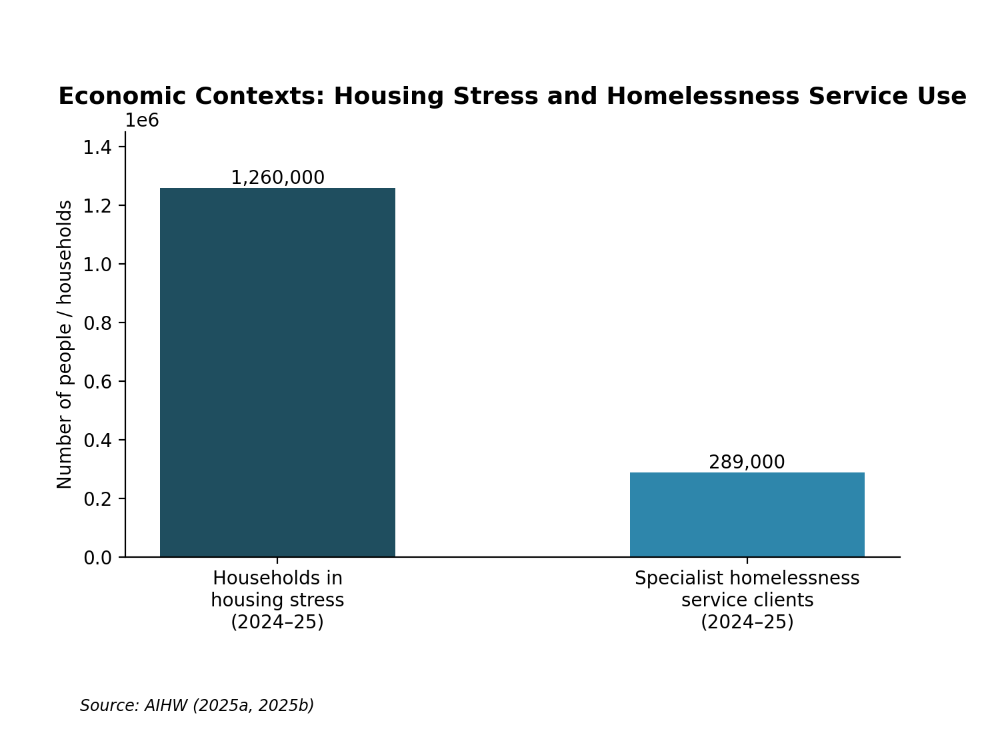

Economic Contexts
Poverty, financial hardship, housing stress and homelessness, and their implications for early childhood education and care.
Understanding the Context
Low-income families facing hardship may not have the resources for food, utilities, transport, healthcare or early childhood education and care (ECEC). Stress associated with housing means lower income groups spend over 30% of their disposable income upon housing costs whilst homelessness suggests temporary forms of accommodation or shelters – severe overcrowding or complete lack of secure dwelling (Australian Institute of Health and Welfare [AIHW], 2025a, 2025b). Such experiences may overlap but remain distinct. Bronfenbrenner's model of bioecology relates development within a range of systems – hardship features within routines or the microsystem, family and ECEC relationships form a mesosystem providing continuity for employment, transport and housing services form the exosystem whilst policies form the macrosystem and longer term hardship or moves shapes the chronosystem. Thus the experiences of children relates to structural conditions rather than parental failure (Grace et al., 2022; Moore et al., 2015). Regional areas see fewer services with transport costs increasing the difficulty of attendance despite fee relief schemes. Sole income families are even more exposed to rent increases. Whilst renters have less tenure security than homeowners groups such as kinship networks can offer care, transport, cultural and emotional support (AIHW, 2025a; Grace et al., 2022).
Impact on Children and Families
Insufficient income creates food and energy strain, postponing healthcare and transport or learning materials. Transport costs cause attendance issues while unaffordable excursions limit participation. Insecure accommodation impacts sleep and routines and adds to parents' administrative burden across agencies. Children exhibit concentration, regulation and relationship difficulties as well as the impact of stigma upon identity and belonging (AIHW, 2025a; Moore et al., 2015).
The effects are not inevitable but are informed by each child's duration of exposure, protection and experience. Factors such as warm caregiving and family resourcefulness within routines or schools all contribute to child resilience (Grace et al., 2022; Moore et al., 2015). Services should not regard tiredness and irregular school attendance as disengagement. Equitable access to participation and continuity during relocation efforts and with consent-based referrals makes realisation of the EYLF V2.0 commitments to relationships and family partnership (Australian Government Department of Education [AGDE], 2022).
Social Policy and Australian Responses
The national Child Care Subsidy 3 Day Guarantee provides subsidised hours to eligible families at least 72 fortnightly since 5 January 2026. Activity or exemptions may still impact entitlement to 100 hours; places, attendance and affordable gap fees are not guaranteed (Australian Government Department of Education, 2026). NSW Start Strong offers fee reductions through different community-preschool and long-day-care arrangements – although transport and availability remain constraints upon participation. The NSW Homelessness Strategy 2025–2035 focuses upon prevention and coordination – monitored action plans offer better accountability but depend upon implementation, housing supply and local capacity (Homes NSW, 2025; NSW Department of Education, 2026). In 2024–25 around 1.26 million low-income Australian households faced housing stress – based upon 2019–20 data. Another 44,600 children within ten years accessed specialist homelessness services – excluding those who required no assistance (AIHW, 2025a, 2025b). Policy knowledge enables educators to explain relief and support enrolment without determining eligibility.

Strategies for Practice
These evidence-informed strategies address economic and housing-related barriers.
Remove participation costs
Costs can exclude children from learning and belonging (AGDE, 2022; Moore et al., 2015).
Audit fees and offer mutual supplies, meals and no-cost experiences universally.
Maintain relational continuity
Relocation of children could be supported by predictable relationships (Grace et al., 2022; Moore et al., 2015).
Nominate a key educator, maintain routines and comfort items to prepare children for transitions.
Use strengths-based family partnerships
Families are knowledgeable partners according to EYLF V2.0 (AGDE, 2022).
Meet privately to listen without making assumptions, and agree upon priorities and consented actions.
Enable flexible engagement
Housing and transport instability can impede participation (AIHW, 2025b).
Offer flexible communication and transfer concise learning information between services with consent.
Use warm referrals
Interacting barriers require connected responses (Moore et al., 2015).
Make clear the choices available and contact the service together to clarify boundaries and follow up.
Community and Professional Partnerships
Services Australia social workers
Crisis counselling and referrals; educators make contact with families without assessing entitlement.
Visit website →Link2Home
Assesses NSW accommodation needs; educators assist with consent-based contact where housing presents as an issue.
Visit website →National Debt Helpline
Offers counselling regarding arrears and creditors; educators perform a referral function rather than advising.
Visit website →Wesley Homelessness Services for Families
Where locally available and eligible, accommodation is offered along with case management; information is shared on consent unless legally required.
Visit website →NSW Child and Family Health Services
Provides free health and developmental support from birth to five years; educators connect with consent.
Visit website →Resources for Educators and Children
Projects, Programs or Websites
Educators and families locate essential services – supports stability and engagement in school and seeking help.
Explains eligibility and repayment for essential-item or bond loans (not rent, bills or debt) – supports engagement without high-cost credit.
Families learn how fee relief works, improving understanding and potential for preschool participation.
Select birth–6 activities and adapt US terminology to build coping and understanding.
Storybooks
 Our Little Kitchen
Our Little KitchenPromotes collective cooking and resourcefulness, developing empathy and shared responsibility.
Discuss food insecurity and help-seeking through fictional characters.
Affirm connection during homelessness; preview content and invite voluntary fictional responses.
Videos, Shows or Podcasts
 YouTube
YouTube YouTube
YouTube YouTube
YouTubeLooks for comfort objects and emotions, developing resilience without false promises.
 YouTube
YouTubeSort fictional examples, building understanding without judging possessions.
References
Australian Government Department of Education. (2022). Belonging, being and becoming: The Early Years Learning Framework for Australia (Version 2.0). acecqa.gov.au
Australian Government Department of Education. (2026). 3 Day Guarantee. education.gov.au
Australian Institute of Health and Welfare. (2025a). Housing affordability. aihw.gov.au
Australian Institute of Health and Welfare. (2025b). Specialist homelessness services annual report 2024–25. aihw.gov.au
De la Peña, M. (2015). Last stop on Market Street (C. Robinson, Illus.). G. P. Putnam's Sons.
Good Shepherd Australia New Zealand. (n.d.). No interest loans. goodshep.org.au
Grace, R., Townley, C., & Woodrow, C. (2022). Understanding the child in context: An ecological approach to child development. In R. Grace, J. Bowes, & C. Woodrow (Eds.), Children, families and communities: Contexts and consequences (6th ed., pp. 2–13). Oxford University Press.
Homes NSW. (2025). NSW Homelessness Strategy 2025–2035. nsw.gov.au
Infoxchange. (n.d.). Ask Izzy. askizzy.org.au
Moore, T. G., McDonald, M., Carlon, L., & O'Rourke, K. (2015). Early childhood development and the social determinants of health inequities. Health Promotion International, 30(Suppl. 2), ii102–ii115. doi.org/10.1093/heapro/dav031
National Debt Helpline. (n.d.). Financial counselling. ndh.org.au
NSW Department of Education. (2026). Start Strong for families. education.nsw.gov.au
NSW Government. (n.d.). If you're homeless or at risk of losing your home. nsw.gov.au
NSW Health. (2026). Child and family health services. health.nsw.gov.au
O'Neill, D. (2021). Saturday at the food pantry (B. Magro, Illus.). Albert Whitman & Company.
Services Australia. (2024). Social work services. servicesaustralia.gov.au
Sesame Workshop. (n.d.). Dot to dot [Video]. YouTube. www.youtube.com/watch?v=sB_fJ9BuDmg
Sesame Workshop. (n.d.). Home is… [Video]. YouTube. www.youtube.com/watch?v=Axv1qGINuJA
Sesame Workshop. (n.d.). Homelessness. sesameworkshop.org
Sesame Workshop. (n.d.). Ribbons of hope [Video]. YouTube. www.youtube.com/watch?v=W98FQXMSWL4
Sesame Workshop. (n.d.). Wants and needs with Bert and Ernie: Financial education for kids [Video]. YouTube. www.youtube.com/watch?v=8X03VasFY38
Sturgis, B. R. (2017). Still a family: A story about homelessness (J.-S. Lee, Illus.). Albert Whitman & Company.
Tamaki, J. (2020). Our little kitchen. Abrams Books for Young Readers.
Wesley Mission. (n.d.). Homelessness services for families. wesleymission.org.au